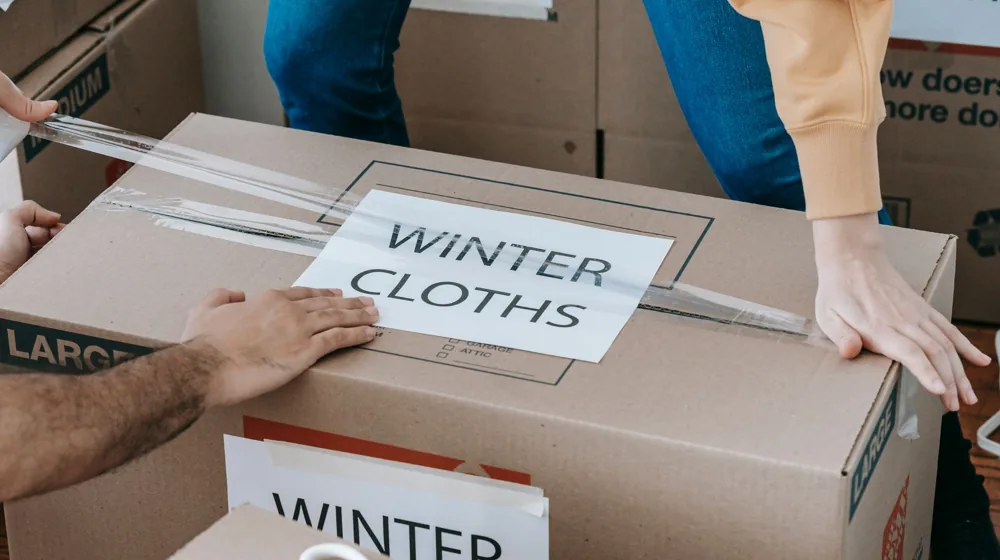

이사 전 짐 정리, 버릴 것과 챙길 것: 후회 없는 체크리스트 A to Z
사진: https://kaboompics.com/ / Pexels (무료 이미지, 출처 표기)
이사 준비, 왜 버리는 것부터 시작해야 할까요?

이사 준비, 막상 시작하려니 어디서부터 손대야 할지 막막하게 느껴지시나요? 특히 오랜 시간 쌓아둔 짐들 앞에서 '버릴까 말까' 고민하는 시간이 가장 오래 걸립니다. 이 고민의 시간을 줄이고 효율적인 이사를 위해서는 '버리는 것'부터 시작하는 것이 핵심입니다.
불필요한 짐을 줄이는 것은 이사 비용 절감에 직접적인 영향을 줍니다. 짐의 양이 줄어들면 포장재, 운반 시간, 필요한 차량 크기 등 여러 부분에서 비용이 감소합니다. 또한, 새집에서 더 넓고 쾌적한 공간을 확보할 수 있으며, 이사 후 정리 시간을 단축해 스트레스도 줄일 수 있습니다.
'버릴 것' 기준 세우기: 이것만 기억하세요
무엇을 버려야 할지 명확한 기준이 없다면 정리가 어렵습니다. 다음 세 가지 기준을 적용해 버릴 물건을 손쉽게 골라내 보세요.
- 1년 이상 사용하지 않은 물건: 옷, 주방용품, 취미 용품 등 1년 이상 손대지 않은 물건은 앞으로도 사용될 가능성이 낮습니다.
- 고장 났거나 수리가 불가능한 물건: 고쳐 쓸 가치가 없거나 수리 비용이 새것보다 비싸다면 과감히 처분하는 것이 현명합니다.
- 추억은 있지만 공간만 차지하는 물건: 오래된 편지나 기념품 등 소중한 추억이 담겼더라도 실용성이 없는 물건은 사진으로 남기고 정리할 수 있습니다.
카테고리별 '버릴 것' 체크리스트
집안 구석구석 숨어있는 불필요한 물건들을 카테고리별로 확인하며 정리해 보세요. 목록을 따라가다 보면 생각보다 버릴 것이 많다는 사실에 놀라실 수도 있습니다.
2026년 8월 기준 대형 폐기물 처리 절차는 지역별로 상이합니다. 해당 지자체 홈페이지(예: 구청, 주민센터)를 통해 미리 확인하여 스티커 구매 또는 수거 예약을 하는 것이 좋습니다.
새집으로 가져갈 '필수 템' 똑똑하게 챙기기
버릴 것을 정리했다면, 이제 새집으로 가져갈 필수품을 분류할 차례입니다. 당장 필요한 물건들은 따로 모아두면 이사 후 혼란을 줄일 수 있습니다.
- 계절에 맞는 의류 (2-3벌): 이사 후 바로 입을 수 있는 편한 옷 위주로 준비합니다.
- 기본 세면도구 및 화장품: 칫솔, 치약, 비누, 샴푸 등 필수품을 작은 파우치에 담습니다.
- 자주 사용하는 상비약: 두통약, 소화제, 연고 등 개인 상비약을 챙깁니다.
- 충전기, 노트북 등 전자기기: 전자기기는 파손 위험이 크므로 직접 운반하는 것이 안전합니다.
- 중요 서류 및 귀중품: 계약서, 신분증, 현금, 보석류 등은 따로 가방에 넣어 직접 보관합니다.
- 아이들 장난감이나 반려동물 용품: 아이나 반려동물의 심리적 안정을 위해 익숙한 물건을 챙깁니다.
- 기타 당장 필요한 물품: 수건, 휴지, 물티슈 등은 새집에서 요긴하게 사용됩니다.
이사 당일 필요한 '생존 키트' 준비물
이삿짐이 모두 옮겨진 후 바로 생활이 가능하도록 '생존 키트'를 준비해두는 것이 좋습니다. 이 키트는 이삿짐 트럭이 아닌 직접 차에 싣거나 따로 운반하여 가장 먼저 찾을 수 있도록 준비합니다.
- 개인 위생용품: 칫솔, 치약, 비누, 수건 등.
- 간단한 간식 및 음료, 물: 이사 중 허기를 달랠 수 있는 에너지바, 빵 등을 준비합니다.
- 비상약, 멀티탭: 혹시 모를 상황에 대비하고 전자기기 사용을 위한 멀티탭도 필수입니다.
- 칼, 가위, 드라이버 등 간단한 공구: 박스를 뜯거나 간단한 조립에 필요할 수 있습니다.
- 쓰레기봉투, 물티슈, 청소도구: 이사 후 남은 쓰레기나 간단한 오염을 처리하는 데 유용합니다.
- 핸드폰 충전기: 가장 중요한 물품 중 하나입니다.
- 세제: 간단한 설거지나 손빨래를 할 수 있도록 소량 챙깁니다.
이사 짐 정리 시 놓치기 쉬운 주의사항
성공적인 이사를 위해서는 몇 가지 주의사항을 미리 숙지하는 것이 중요합니다. 작은 부분까지 신경 쓰면 이사 과정의 번거로움을 크게 줄일 수 있습니다.
- 미리 시작하기: 최소 이사 한 달 전부터 짐 정리를 시작하여 충분한 시간을 확보하세요. 막판에 서두르면 빠뜨리는 것이 많아집니다.
- 버릴 물건 처리 계획: 대형 폐기물, 재활용품, 의류 수거함 등 각 물건의 처리 방법을 미리 확인하고 준비합니다. 무단 투기는 금지됩니다.
- 중요 서류 및 귀중품 별도 보관: 잃어버릴 위험이 있는 중요 서류나 귀중품은 반드시 직접 챙길 가방을 준비하여 개인이 보관해야 합니다.
- 사진 찍어두기: 가구 배치, 전선 연결 상태 등 나중에 참고할 만한 것들은 사진으로 기록해두면 새집에서 정리할 때 큰 도움이 됩니다.
- 각 상자에 내용물 표기: 어떤 물건이 들어있는지, 어떤 방에 놓을 것인지 상세히 적어두면 이사 후 정리가 훨씬 수월해집니다. '주방', '안방', '아이 방' 등으로 구역을 나누고 내용물을 명확히 기재하세요.
🔗 이 글도 함께 보면 좋아요: 겨울철 난방비 30% 줄이는 7가지 비결: 지금 바로 시작해야 할 체크리스트